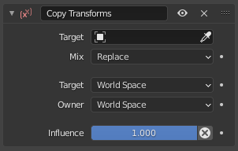

复制变换约束¶
复制形变（Copy Transforms） 约束强制约束对象获得目标的变换属性。
选项¶

复制形变面板。¶
- Target 目标
- 混合
指定如何混合复制的形变和现有形变。
- 替换
复制的形变将替换现有的形变。
- Before Original（在现有形变之前）
The new transformation is added before the existing transformation, as if it was applied to an imaginary parent of the constraint owner. Scale is handled like in the Aligned Inherit Scale mode of bones to avoid creating shear.
- After Original（在现有形变之后）
The new transformation is added after the existing transformation, as if it was applied locally to an imaginary child of the constraint owner. Scale is handled like in the Aligned Inherit Scale mode of bones to avoid creating shear.
- 目标/所有者
空间之间的标准转换。更多信息请参见 常见的约束属性。
- 影响
控制约束对对象的影响百分比。有关详细信息，请参阅 通用约束属性 。